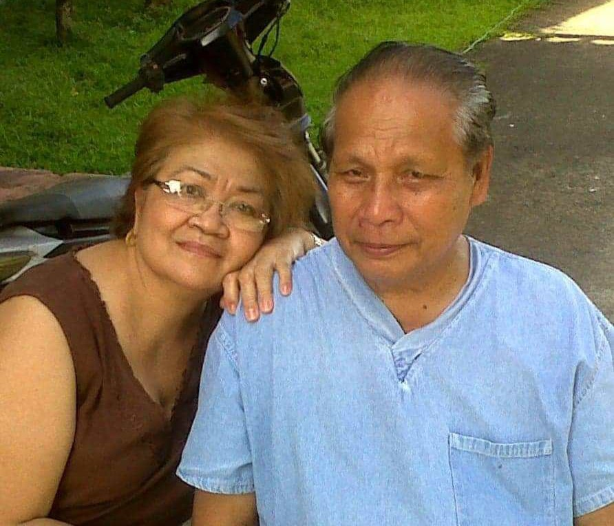

AMOR, CURA ET MERITTUM
Estenias started with humble beginnings, in 1979, the couple, Dr. Ananias B. Hibo, Sr. and Dr. Estelita N. Francisco-Hibo, mindful of a felt need of the Municipality of Casiguran, planned and successfully executed putting up an educational institution that will offer affordable quality education to Casiguran and neighboring towns. Initially, it offered short term courses in Men’s Tailoring, Automotive, Cosmetology and the Junior Secretarial Course.
In June 1982, it gained recognition as a complete science-oriented secondary school and held its first graduation in March 1983 with 17 graduates. Since then, Estenias produced graduates with an average of 50 students every end of the school year.
However, due to persistent demand of the community and the absence of medical and educational institution in the province, the couple established the ESTENIAS FOUNDATION SCHOOL (EFC) in the City of Sorsogon, the school was established in 1984.
The School offered unique and distinct courses not heretofore offered in any schools in the province. The Junior Secretarial Course leads to a course in Medical Secretary (JSC-Med. Sec), Associate in Tourism (AT). EFC also offered Bachelor of Arts (AB) in Psychology, a Four-Year course, that was the only degree program and the first of its kind in the province of Sorsogon. The School had its first graduation in March 1987 with 25 graduates. Enrollment continued to grow as the community perceived the school the best of intentions to offer quality education. The policy of open admission and selective retention was strictly implemented.
It was in the midst of the prestigious status of the Estenias Foundation School when some unforeseen circumstances hampered its existence. It has been temporarily closed in the year 2005, 6 years after the Hibo Family migrated to the United States of America wherein they lived for more than 18 years. In the year 2008, when the family decided to migrate back to the Philippines. After almost 20 years, only the Secondary Department of the school in Casiguran, Sorsogon remained operational. The school department was reopened in the Casiguran campus. The Commission on Higher Education in Region V has granted a Government Permit to operate the Diploma in Midwifery and after 2 years of operation was granted Government Recognition. There were 4 graduates in the Diploma in Midwifery who finished last March 31, 2011.
Estenias revived its commitment to technical-vocational courses by offering courses that were accredited by the Technical Education Skills Development Authority (TESDA). The following TESDA-accredited courses were offered beginning 2009 onwards, to wit: Household Services NCII, Housekeeping NCII, Hilot Wellness Massage NCII, and Barangay Health Services NCII. In 2011, Estenias received commendation from TESDA Sorsogon Provincial Office for the excellent performance rating in certification, assessment as well as employment. Six years onwards, Estenias added Hilot Wellness NCII accredited Assessment Center to its services provided under TESDA.
As a testament of the commitment to a complete education that will mold a person in the vision of a true Estenian, the school started offering Pre-Elementary Education and Elementary Education. The two departments are mainly guided by the principle of contributing to the society an upright citizen with Filipino values that is family-centered. God-fearing as well as law abiding and environmentally friendly individual.
In school year 2014 – 2015, the Chief Executive Officer, Atty. Annalyn Sherry F. Hibo-Gamboa, initiated the Estenias – Philippine Army Scholarship Program by providing free tuition fee to Philippine Army dependents as well as civilian beneficiaries. The program is still being implemented and had produced numerous registered midwives and licensed professional teachers.
The year 2016 was very memorable for Estenias. The fourth batch of Diploma in Midwifery produced a topnotcher in Ms. Maribel D. Sabenia, RM when garnered the rating of 90.10 in the Philippine Midwifery Licensure Examination – November 2016. Estenias was No. 1 in the whole Philippines! A momentous achievement indeed that affirmed the fruition of its mission and a confirmation of its vision, to provide quality education at affordable price. It is also noteworthy to mention the Ms. Sabenia was a Hibo-Francisco Scholarship grantee and was also awarded financial assistance even up to the day she took an oath as a Registered Midwife on December 11, 2016. Estenias now offers Bachelor of Science in Midwifery with numerous students coming from all over Bicolandia.
Estenias also offered Bachelor in Elementary Education, General Education as well as with concentration in Pre-Elementary Education. To date, the performance rating of the School of Education had always been higher than the national average. Another indication that Estenias, true to its promise, continuously provides excellent education at a very minimal cost.
As Estenias continues to grow and expand, CHED-accredited courses were also added to the course offerings. In the academic year 2019 – 2020, Estenias launched the offering of Bachelor of Science in Criminology with 50 enrollees. In the same school year. Estenias had been accredited also as a Universal Financial Assistance in Tertiary Education Scholarship (UniFAST TES) provided by the CHED.
On March 14, 2020, the world came into a halt with the spread of the COVID-19 virus thereby causing a pandemic. Classes were suspended. For A.Y. 2020 – 2021, all classes were held in modular, online or blended learning modality. It was also during the COVID-19 pandemic that Estenias lost its founders, Dr. Ananias B. Hibo, Sr. passed away on August 29, 2020. A year after, Estenias family was again mourning for the loss of the eldest son of the founders, Ananias Francisco Hibo, Jr. on September 4, 2021 and three days later, founder, Dr. Estelita N. Francisco-Hibo passed away from COVID-19 on September 7, 2021. It was a very difficult time for the whole school community. Atty. Annalyn Sherry F. Hibo-Gamboa assumed the position of the President/Chairman of the Board.
Estenias will continue to grow and provide excellent quality education imbued with the guiding values of love, care and service to humanity.